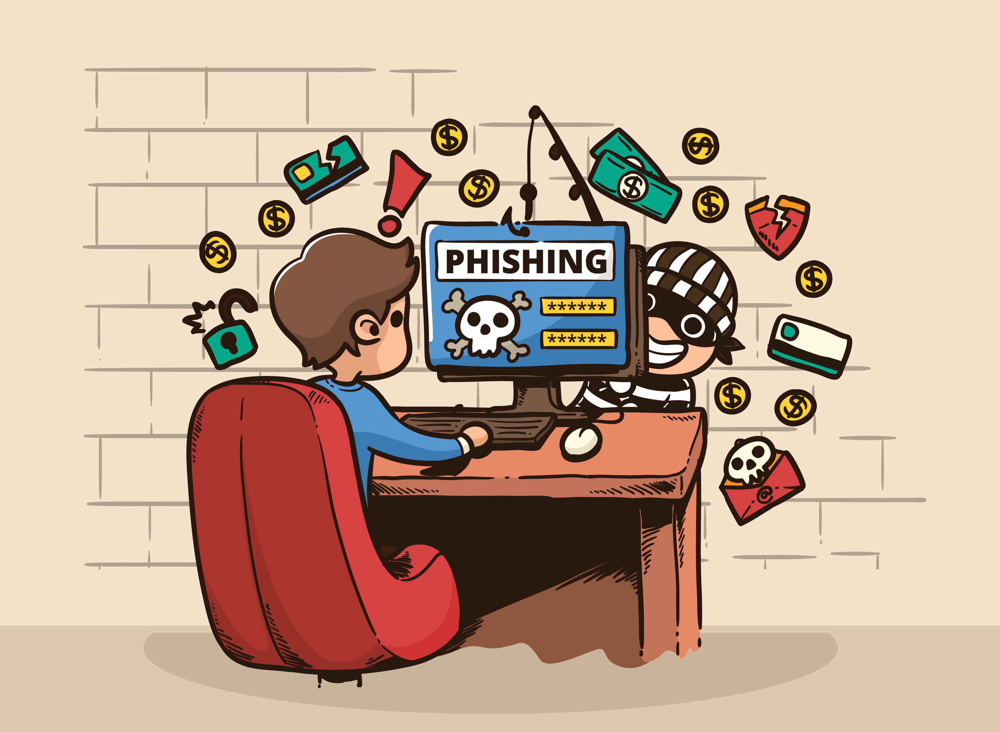

Protección contra Malware
El malware, o software malicioso, representa una de las mayores amenazas a la seguridad en línea. Estos programas dañinos pueden robar información personal, secuestrar tus dispositivos, ralentizar tu sistema y causar diversos problemas. En esta sección, te proporcionaremos estrategias clave para proteger tus dispositivos y datos contra el malware.
1. Instala y mantén actualizado un software de seguridad integral: Utiliza una solución de seguridad que incluya antivirus, antispyware y firewall. Mantén este software siempre actualizado para asegurarte de que puede detectar y neutralizar las amenazas más recientes.
2. Configura controles parentales: Si tienes niños en casa, los controles parentales pueden ayudarte a restringir el acceso a sitios web potencialmente peligrosos y prevenir la descarga de archivos sospechosos.
3. Utiliza navegadores web seguros: Opta por navegadores que ofrezcan características de seguridad avanzadas y asegúrate de mantenerlos actualizados. Además, configura el navegador para bloquear sitios web no seguros y avisar sobre descargas potencialmente dañinas.

4. Implementa la autenticación multifactor: Añadir capas adicionales de seguridad a tus cuentas puede dificultar el acceso no autorizado, incluso si tus contraseñas son comprometidas. Utiliza métodos como códigos enviados por SMS, aplicaciones de autenticación o dispositivos de seguridad físicos.
5. Desactiva funciones innecesarias: Algunas características de tu sistema operativo y aplicaciones pueden abrir puertas a posibles ataques si no se utilizan correctamente. Desactiva funciones que no necesitas, como el uso compartido de archivos en redes públicas.

6. Mantén la privacidad en redes sociales: Configura tus cuentas de redes sociales para limitar quién puede ver tu información personal y publicaciones. Sé selectivo con las solicitudes de amistad y los enlaces que sigues.
Sigue estos consejos para proteger tus dispositivos y datos contra el malware. La prevención y la educación son esenciales para mantener tu información segura en el entorno digital.